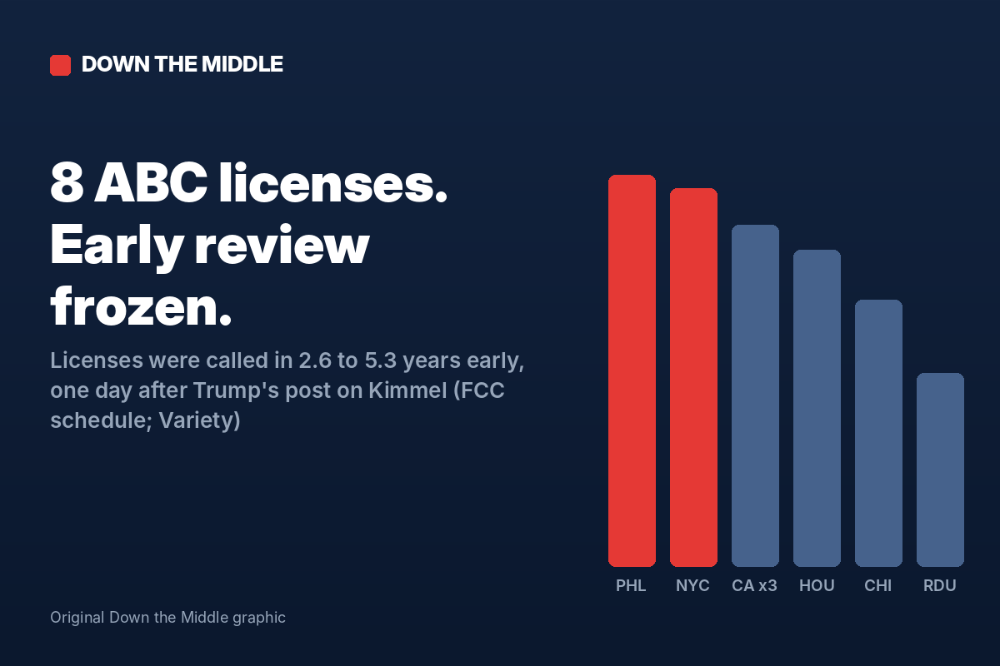
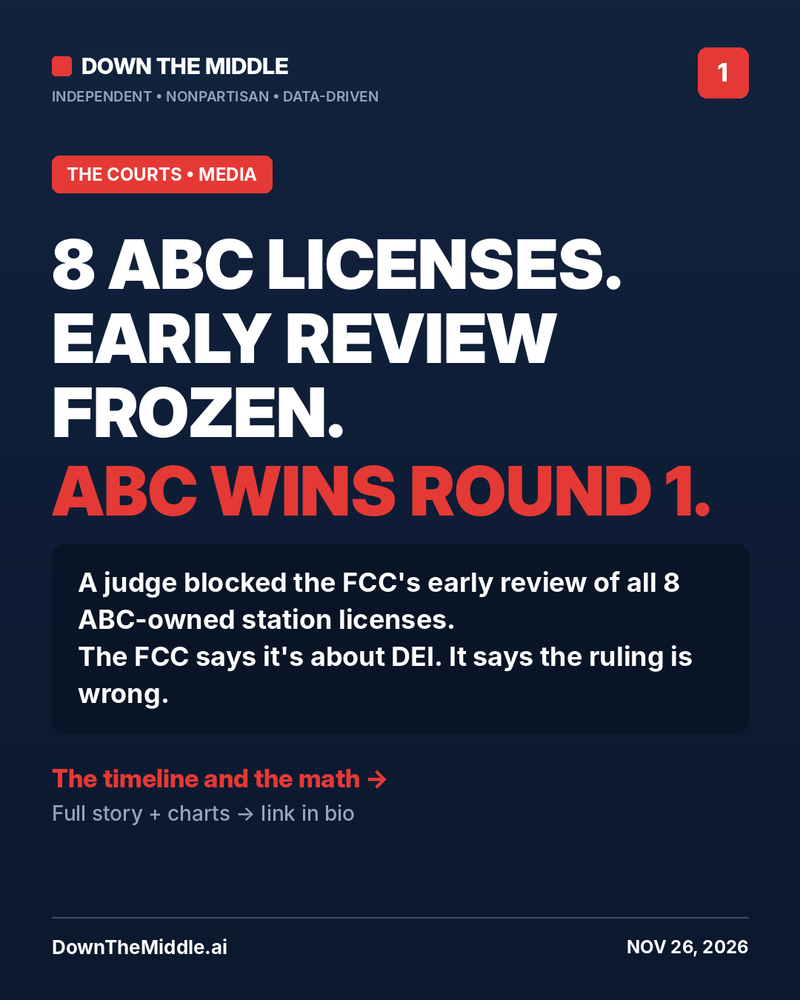
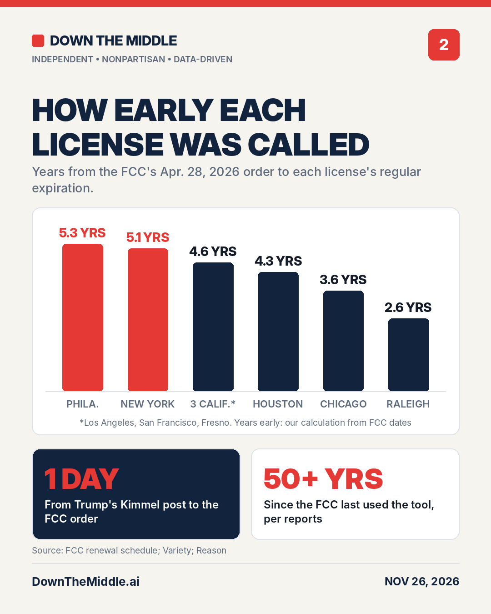

A Judge Froze the FCC’s Early Review of 8 ABC Licenses. Here’s the Math Behind “Not a Close Case.”
November 26, 2026 · Independent, nonpartisan analysis

A federal judge in Washington on Wednesday blocked the Federal Communications Commission from pressing ahead with its early review of the broadcast licenses of all eight TV stations owned by ABC, the Disney-owned network. [1] [3] U.S. District Judge Loren AliKhan granted a preliminary injunction, finding ABC is likely to win its claim that the review was retaliation for speech the administration disliked. [1] [6] “This is not a close case,” she wrote. [2]
The FCC says the review is about Disney’s diversity, equity and inclusion (DEI) practices, not ABC’s programming, and a spokesperson said the ruling is “wrong on the facts and wrong on the law.” [6] [7] The ruling is a preliminary step; the lawsuit itself continues. [6]
By the numbers
Figures from news reports, the FCC’s license schedule and our own date math.
What happened
On April 28, the FCC’s Media Bureau ordered ABC’s eight owned stations (WABC New York, KABC Los Angeles, WLS Chicago, WPVI Philadelphia, KTRK Houston, KGO San Francisco, WTVD Raleigh-Durham and KFSN Fresno) to file license renewals within 30 days, by May 28. [7] The order said it stemmed from an investigation into whether Disney and ABC broke the FCC’s ban on unlawful discrimination, an inquiry to which ABC had answered two FCC letters. [7] It came five days after a Jimmy Kimmel joke about Melania Trump and one day after President Trump posted that Kimmel should be fired. [7] [10] In late May the FCC reset the licenses’ expiration dates to May 28, then changed them back after Disney objected, Bloomberg Law reported. [9] ABC and Disney sued in August. [4] [6]
In a 45-page opinion, Judge AliKhan denied the FCC’s motion to dismiss and froze the early renewals. [2] She found the timing pointed to pretext, according to accounts of the opinion, and cited to the FCC’s requests for internal communications of The View’s producers, employees’ political donations and editorial standards for ABC news shows. [2] [6] She also turned down ABC’s broader request to bar future threats, saying a court can’t block what is only feared. [4] [6] The FCC can still pursue its other inquiries into ABC, including one into The View. [6]
How early each license was called in
Years between the FCC’s Apr. 28, 2026 order and each station’s regular license expiration. Red marks the two called in more than five years early. Hover or tap a bar for details.
Expiration dates are from the FCC’s TV renewal schedule by state (New York, California, Illinois, Pennsylvania, Texas, North Carolina). The years-early figures are Down the Middle’s calculation. Reports put the range at “2028 to 2031,” which matches. [7] [8]
Insight 1
Added up, the FCC called in about 35 years of license time
TV licenses run eight years, and they come up for renewal on a fixed state-by-state schedule. [8] Against that schedule, the April order pulled each ABC renewal forward by 2.6 to 5.3 years. Added across the eight stations, that is about 34.6 years of license time, an average of 4.3 years per station (our calculation). [8] The two largest markets in the group, New York and Philadelphia, were pulled forward the furthest. [8] Carr has said it had probably been five or six decades or more since the agency used this tool, and none of the eight licenses had ever been denied renewal, according to MeidasTouch’s account of the record. [1] [2] That is the scale the judge was weighing when she described the possible loss of a license as existential. [1] [6]
The timing the judge focused on
Days between key events in 2026. Red marks the gap between the president’s post and the FCC order. Hover or tap a bar for details.
Dates from Variety’s Apr. 28 report and coverage of the Nov. 25 ruling. Day counts are Down the Middle’s calculation. [3] [7]
Insight 2
The FCC’s best fact and the judge’s best fact are both about timing
The FCC’s DEI investigation predates the Kimmel joke: by April, ABC had already responded to two FCC letters of inquiry. [7] That supports the agency’s position that it was enforcing anti-discrimination rules. [3] But the order to renew early came one day after the president’s post, and the judge cited 11 times over two years that Trump called for ABC’s licenses to be revoked or targeted, according to MeidasTouch’s reading of the opinion. [2] [7] Even a conservative columnist at PJ Media, who called the investigation potentially legitimate, said the FCC had other ways to get the evidence and still needs to explain why the licenses had to come due right then. [10] On a preliminary injunction, the judge only has to find ABC is likely to win. Whether the pretext finding holds is the question for the rest of the case and any appeal.
Insight 3
On the normal schedule, only one of the eight files before this term ends
If the injunction holds, the licenses go back to their regular dates. On the FCC’s schedule, North Carolina stations like WTVD must file by Aug. 1, 2028. [8] The next filings, for Illinois stations like WLS, are due Aug. 1, 2029, after the current presidential term ends on Jan. 20, 2029. [8] Until then, the stations keep broadcasting under their current licenses. [5] The last, Pennsylvania’s WPVI, isn’t due to file until April 1, 2031. [8] So the fight over the early review is in effect a fight over whether seven of the eight renewals happen under this FCC or a later one. That is our reading of the calendar, not something either side has argued in the coverage we reviewed.
How we got here
Solid dots are documented events. Dashed dots are scheduled or expected.
- Sep 2025FCC chair
After a Kimmel monologue, Carr warns ABC it can go “the easy way or the hard way”; ABC suspends the show for a week. [7] [1] - Jan 2026FCC
Opens an equal-time inquiry into The View. [1] - Apr 23ABC
Kimmel’s joke about Melania Trump airs. [7] - Apr 27President
Trump posts that Kimmel should be fired. [7] - Apr 28FCC
Media Bureau orders all eight ABC stations to file renewals within 30 days. [7] - Late MayFCC
Resets the licenses’ expiration to May 28, then restores the original dates. [9] - Jul 2026Networks
ABC and NBC decline to air a Trump primetime address; Trump says that should mean revocation. [1] - Aug 2026ABC, Disney
Sue the FCC and Carr in federal court in D.C. [4] [6] - Nov 25Judge AliKhan
Grants a preliminary injunction halting the early renewals; denies the FCC’s motion to dismiss. [1] [2] - Dec 2FCC
Compliance report due, per PJ Media’s reading of the docket. Scheduled [10] - Dec 9Both sides
Proposals for next steps due. Scheduled [10]
How each side makes its case
Same ruling, three readings
We describe each position in our own words and check it against the data.
The FCC and its defenders
- The review targets whether Disney’s DEI programs broke anti-discrimination rules, not the Kimmel controversy. [3] [7]
- The agency says Supreme Court precedent is on its side and expects to prevail in full. [3]
- Carr reads the public-interest standard to let the FCC weigh whether broadcasters serve their communities, including on news coverage. [1]
ABC and its supporters
- ABC News called the ruling “an important victory for the First Amendment.” [3]
- ABC told the court the probes chilled its coverage: The View stopped inviting candidates and a Senate candidate’s Kimmel spot moved to YouTube. [1] [2]
- Former Reagan-era FCC chair Mark Fowler, in a filing, called the review more extreme than anything he saw as chairman. [1]
Down the middle
Both sides have something real. The FCC does have authority to enforce anti-discrimination rules, its inquiry into Disney started before the Kimmel joke, and this is a preliminary ruling, not a final judgment. [3] [6] [7] The judge also declined to go as far as ABC wanted. [4] But the record she relied on is heavy: a tool unused for half a century, all eight of one network’s stations at once, an order one day after a presidential demand, and requests for newsroom material that go well beyond hiring data. [1] [2] [7] A useful test, borrowed from the PJ Media column: would the same steps look acceptable if the parties were reversed? [10] The answer an appeals court gives will set the rules for whichever party runs the FCC next.
What to watch
The docket: the FCC’s compliance report (Dec. 2) and both sides’ proposals for next steps (Dec. 9), as reported by PJ Media. [10] An appeal: the FCC says it expects to prevail; none of the coverage we reviewed reported an appeal filing yet. [3] [6] The other probes: whether the FCC presses its DEI and The View inquiries, which the injunction does not stop. [6] Other networks: Trump has also attacked NBC’s licenses, so watch whether the FCC tries similar steps elsewhere. [1]
Share it


Sources and primary documents
- [1] Reason (libertarian), via Yahoo News — A federal judge blocks the FCC’s review of ABC’s licenses, saying it likely violates the First Amendment (Nov 26, 2026)
- [2] MeidasTouch (progressive), via Yahoo News — Federal judge blocks Trump FCC’s crackdown on ABC (Nov 26, 2026)
- [3] Fox News — Federal judge orders FCC to halt early review of ABC station licenses (Nov 25, 2026)
- [4] Fox News — Judge blocks FCC review of ABC broadcast licenses in First Amendment ruling (Nov 26, 2026)
- [5] Washington Examiner — Federal judge halts FCC review of Disney’s ABC broadcast licenses (Nov 25, 2026)
- [6] Conservative Daily News (conservative aggregator) — Judge blocks FCC’s early review of 8 ABC station licenses (Nov 26, 2026)
- [7] Variety — Trump’s FCC orders ABC to file broadcast TV license renewals within 30 days (Apr 28, 2026)
- [8] Federal Communications Commission (primary data) — Broadcast television license renewal dates by state
- [9] Bloomberg Law — FCC returns ABC TV licenses to original dates after mixup (May 29, 2026)
- [10] PJ Media (conservative opinion) — The referee test: why did the FCC call in eight ABC licenses early? (Nov 26, 2026)
- [11] U.S. District Court for D.C. (primary document) — Memorandum opinion, ABC v. FCC, as posted by Courthouse News (Nov 25, 2026)
We could not retrieve the opinion text directly for this post; its details (page count, bond, the 11 cited statements, the documents requested) are as reported by MeidasTouch, Reason and Conservative Daily News, and the Dec. 2 and Dec. 9 dates are from PJ Media’s reading of the docket. The FCC spokesperson’s statement and the ABC News statement are as reported by Fox News. Years-early figures, the 34.6 license-year total and the day counts are Down the Middle’s calculations from the FCC schedule and reported dates.